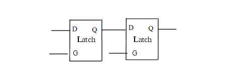

| Description | This rule fires when Leda detects latch-to-latch paths in the design. A latch-to-latch path is one that begins and ends with latches and does not contain any sequential parts in between. You can activate this rule to double check these paths in the design. |
| Policy | DESIGN |
| Ruleset | STRUCTURE |
| Language | VHDL/Verilog |
| Type | Hardware |
| Severity | Error |
This is an example of invalid Verilog code, followed by a circuit diagram that illustrates the problem:
module ntl_str50_top; ... // GTECH_LD1 -latch cell GTECH_LD1 I1 (.D(Din), .G(enable), .Q(D_latch1)); GTECH_LD1 I2 (.D(D_latch1), .G(enable), .Q(D_latch2), ); // NTL_STR50 fires -- I1->I2 : latch to latch ... endmodule